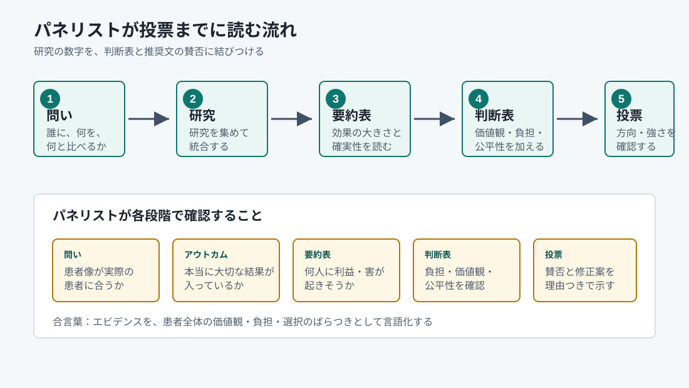
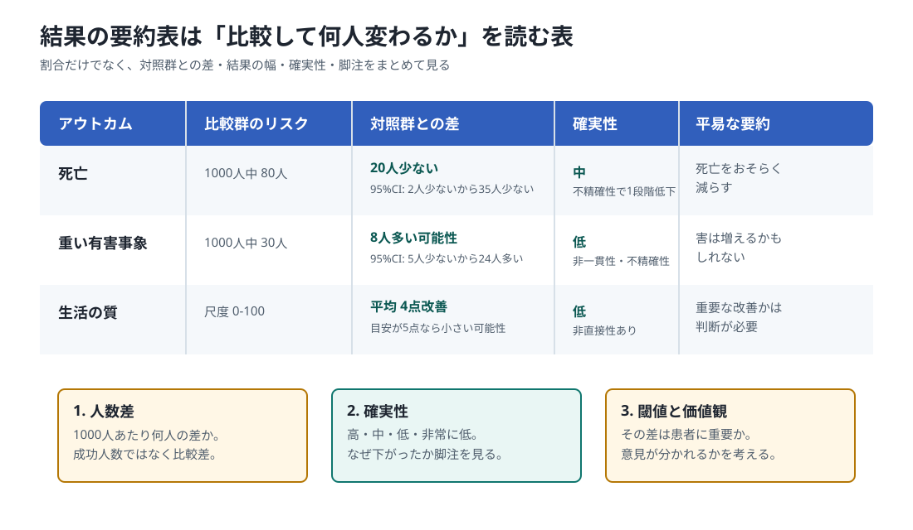
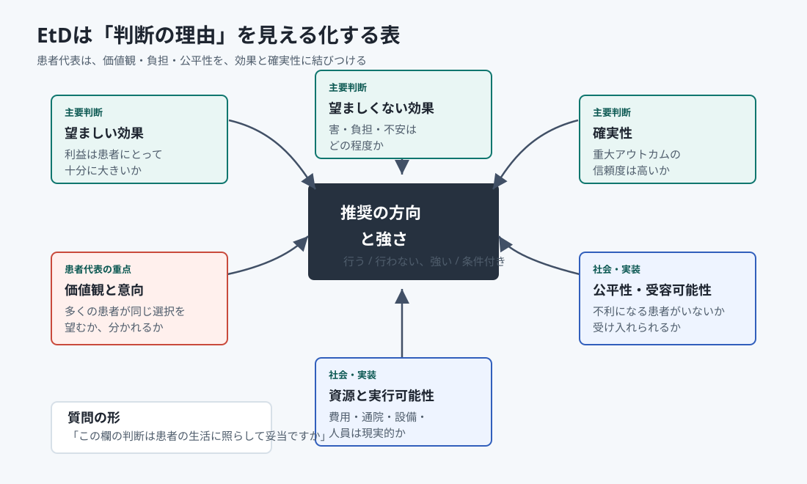
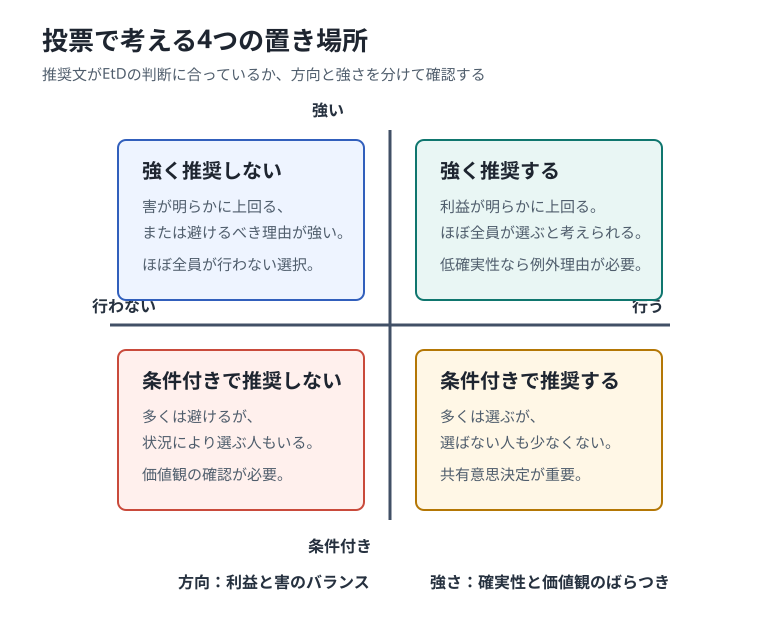

レビュー前
問いと物差しを決める
優先する問い、比較、重大なアウトカム、重要な差の目安、COIの扱いを決めます。
必要な時だけ開く、資料読解の実践ガイド
研究結果の要約表や判断表を読み、「患者にとって何がどのくらい変わるのか」「その見積もりをどこまで信じられるのか」を、 推奨の方向・強さと投票理由へつなげるページです。第一面の7段階で、今読む必要があると分かった項目から始めてください。
会議の流れに戻りたい時
第一面の7段階へ戻る 今は、どの資料を読み、何を判断・投票する時期か 会議案内から外部査読後までを7段階に分け、各時期の「読む資料」「判断・投票」「残すもの」だけを一覧で確認できます。 7段階の流れを見る研究結果の要約表、人数差、研究ごとの結果の図、判断表（EtD表）を、図と具体例で順に学びます。
全体像
最終会議では、研究結果そのものに投票するのではありません。研究をまとめた資料と判断表をもとに作られた推奨草案を読み、 「この判断は患者にとって納得できるか」を検討して投票します。結論がその場でまとまらない時は、論点を残して後日のWeb会議やアンケートで続けます。

図から読み方を取り戻す
最初から全部を暗記する必要はありません。要約表で全体を見て、人数差へ戻り、研究ごとの図で幅を確かめ、最後に判断表へ進みます。 図と文章を往復することが、推奨草案を自分の言葉で説明する近道です。
この地図を前後に広げる
第一面の7段階では、システマティックレビューを始める前の問い・アウトカム・重要な差の決定から、 最終会議で推奨の方向・強さ・日本語の文章を完成させるところまでを時系列で確認できます。
レビュー前
優先する問い、比較、重大なアウトカム、重要な差の目安、COIの扱いを決めます。
レビュー後
基準となる人数、相対効果、人数差、結果の幅、重要な差、確実性を確認します。
最終会議
判断表を一項目ずつ確定し、方向、強さ、推奨文、注意書き、実装上の配慮を決めます。
最初に変える読み方
研究結果を読むとき、つい「有意差がある」「有意差がない」という二択で考えたくなります。 しかし、診療ガイドラインの投票では、二択だけでは不十分です。 どのくらい良さそうか、どのくらい悪く見える可能性があるか、その幅を見て判断します。
「統計学的に差があるから採用」「差がはっきりしないから効果なし」
P値という数字で、この二択を判断している資料もあります。ただし、P値は効果の大きさや患者にとっての重要性を直接示すものではありません。
「最もありそうな効果はどれくらいか。小さく見積もるとどこまで小さいか。悪い側に振れると害まであり得るか」
この幅を示す数字を、信頼区間と呼びます。名前は難しいですが、「結果のゆれ幅」と考えると読みやすくなります。
望ましくないアウトカムで、標準治療では1000人中100人に起きるとします。 新治療の最もありそうな読みでは1000人中80人、結果の幅は1000人中60人から105人までだとします。
| 読み取る値 | 人数に直す | 意味 |
|---|---|---|
| 最もありそうな値 | 1000人中80人 | 標準治療より20人少ない |
| 良い側の端 | 1000人中60人 | 標準治療より40人少ない可能性がある |
| 悪い側の端 | 1000人中105人 | 標準治療より5人多い可能性もある |
つまり、「最もありそうなのは1000人中20人の減少。ただし、あり得る範囲は40人減少から5人増加まで」と読みます。 ここまで読んでから、患者にとって十分大きい差か、害の可能性をどう扱うかを議論します。
Step 1
推奨は「何をすべきか」に答える文です。会議資料では、この問いをCQ、問いの中身をPICOと呼ぶことがあります。 名前は難しく見えますが、意味はシンプルです。「誰に」「何を」「何と比べて」「何を良い結果と考えるか」をそろえるためのメモです。 ここがずれると、後の要約表や判断表が正しくても、投票対象がぼやけます。
Step 2
会議資料では、この表をSoF表と呼ぶことがあります。これは「Summary of Findings」の略で、研究結果を投票用に短くまとめた表です。 ここでは「効果があるか、ないか」を探すのではなく、 対照群と介入群の差が、患者にとってどのくらい大きく、どのくらい確かかを読みます。

医療関係者の中には、システマティックレビューで採用された元論文まで読んで会議に臨んでくださる方がいます。 これはパネル全体にとって大変ありがたい準備です。
ただし、元論文で見つけた問題点は、今回のエビデンスの確実性や効果推定にどの程度影響するかを分けて扱います。 確実性を大きく変える指摘なら修正が必要ですが、重要な気づきであっても全体の判断への影響が小さい場合は、その論点だけに議論が集中しすぎないよう注意します。
特に、採用論文が1〜2本と少ないときに「この論文は除外すべきではないか」という議論になると、エビデンスなしとして議論が止まることがあります。 可能な限り、会議前に事務局や方法担当者へ共有し、当日は「全体の推奨判断に影響するか」を確認しながら扱いましょう。
要約表の最重要ポイント
要約表の「1000人あたり4人少ない」は、「1000人中4人だけが成功する」という意味ではありません。 多くの場合、対照群、つまり標準治療や従来の治療を受けた場合と比べて、新しい介入によりアウトカムが4人分少ない、または多いという意味です。
「新治療を受けると1000人中4人しか成功しない」
これは誤りです。要約表の人数差は、通常「比較した差」を表します。
「標準治療では1000人中40人に入院が起きる。新治療では1000人中36人に入院が起きる。差は1000人中4人少ない」
つまり、新治療にすると標準治療に比べて入院が4人減る、という読み方です。
| 項目 | 人数での表現 | 読むときの意味 |
|---|---|---|
| 対照群 | 標準治療で1000人中40人が入院 | 比較の土台です。現在の標準的な治療、従来治療、無治療、別介入などが入ります。 |
| 介入群 | 新治療で1000人中36人が入院 | 新しい治療や検査を行った場合に予測される人数です。 |
| 差 | 1000人中4人少ない | 標準治療に比べ、新治療で入院が4人減るという意味です。成功者が4人という意味ではありません。 |
相対危険度が同じでも、もともとのリスクが低い集団と高い集団では、1000人あたりの人数差が変わります。 そのため、要約表では相対効果だけでなく、想定された対照群リスクが自分たちの対象者に近いかを確認します。
| 標準治療での入院 | 相対危険度 | 新治療での入院 | 人数差 |
|---|---|---|---|
| 1000人中20人 | RR 0.90 | 1000人中18人 | 1000人中2人少ない |
| 1000人中200人 | RR 0.90 | 1000人中180人 | 1000人中20人少ない |
重要性の判断
会議資料では、患者にとって意味がある最小の差をMIDと呼ぶことがあります。 難しく見えますが、「このくらい変われば、患者にとって大事と言えそうだ」という目安です。 いくら統計学的に有意差があっても、患者にとっての意思決定に小さすぎる値ならば、推奨の根拠としては弱いかもしれません。 一方で、この目安がいつも存在するとは限りません。存在しない場合は、パネルが事前に判断の閾値を明示して議論します。
| 結果の見え方 | 読み方 | 投票時の扱い |
|---|---|---|
| 点推定値がMIDを超え、信頼区間全体も重要な差を上回る | 重要な利益または害が起きる可能性が高い | 推奨の方向を支える強い材料になる |
| 点推定値はMIDを超えるが、信頼区間がMIDをまたぐ | 重要かもしれないが、不確実性が大きい | 条件付き推奨、追加説明、または慎重な文言を検討する |
| 信頼区間全体がMID未満 | 差はあっても、患者にとって重要ではない可能性が高い | 他の利益・害・負担がなければ推奨を強めにくい |
| 重要な利益と重要な害の両方を含む | 推定が不精確で、判断が大きく変わり得る | 強い推奨は難しく、会議で追加確認が必要になる |
新治療の点推定値が4点改善、95%信頼区間が1点改善から7点改善なら、最もありそうな効果はMIDに届いていません。 ただし、信頼区間の上限はMIDを超えるため、重要な改善の可能性を完全には否定できません。 この場合は「QOLを改善するかもしれないが、患者にとって十分重要な改善かは不確実」と読みます。
研究資料の読み方
最もありそうな効果です。どちらに傾いているかを見ます。
効果のあり得る範囲です。差なしの線や重要な閾値をまたぐか確認します。
研究ごとの結果が大きく違う場合、なぜ違うのか、患者集団が違うのかを質問します。
Step 3
会議資料では、この判断表をEtDと呼ぶことがあります。これは「Evidence to Decision」の略で、 研究結果を推奨に変えるときの理由を見える化する表です。要約表で効果を読み、判断表で価値観、資源、公平性、受け入れやすさ、実行可能性を加えて、 推奨の方向と強さを決めます。

患者や社会にとって放置できない問題か。疾患負担、現在の困りごと、診療のばらつきを確認します。
死亡、合併症、症状、生活の質などの改善がどれくらいか。患者に意味のある大きさかを見ます。
価値観や意向は、アンケートの平均点だけで決まるものではありません。調査、インタビュー、質的研究、意思決定支援資料から得られた情報を優先し、 「多くの人が同じ方向を望みそうか」「意見が分かれそうか」「どんな理由で分かれるのか」を整理します。 パネルの経験は見落としを探す手掛かりになりますが、対象となる人々の価値観を調べた研究の代わりにはなりません。研究が乏しくパネルが推測した場合は、そのことと不確実性を明記します。
例えば、「死亡」と「病気の再発」では、重要度は同じ重大となると思います。しかし、その病気が再発しても治療可能な場合、「死亡」と「病気の再発」は、臨床判断の重みが異なります。このような違いを「効用値」として示すこともありますし、なくても、どのアウトカムを最も推奨の判断に寄与するかを考えながら推奨文を作成しましょう。
Step 4
推奨は、方向「行う・行わない」と、強さ「強い・条件付き」の組み合わせです。 「標準治療だから」「患者が望むから」だけではなく、判断表の理由が文言に反映されているかを見ます。

Step 5
投票は「推奨草案に同意するか」だけではなく、「どこをどう直せば同意できるか」を示す機会でもあります。 以下をすべて確認してから投票します。
0/10 項目完了
演習
以下は練習用の架空例です。実際の医療判断ではなく、資料の読み方と投票理由の作り方を練習するためのものです。
成人の慢性疾患Xで、標準治療に加えて介入Aを行うべきか。比較は標準治療のみ。
| アウトカム | 標準治療 | 介入A | 差 | 確実性 |
|---|---|---|---|---|
| 入院 | 1000人中120人 | 1000人中90人 | 1000人あたり30人少ない | 低 |
| 重い有害事象 | 1000人中20人 | 1000人中28人 | 1000人あたり8人多い可能性 | 低 |
| 治療負担 | 通常診療 | 毎週通院が必要 | 通院負担が増える | 記述的情報 |
判断表草案：望ましい効果は「小さいから中等度」、望ましくない効果は「小さい」、価値観は「ばらつきあり」。 入院を何人減らせば重要と考えるかの明確な目安はなく、パネルでは「1000人中10人以上の入院減少」を判断の目安として議論する予定。 推奨草案は「介入Aを条件付きで提案する」。
立場別の読み方
ここまで読んだら、自分の立場に近いボタンを押して、別ページで会議前に特に確認したい視点を読み足してください。 役割を固定するためではなく、専門性、実施者の視点、一般の人の視点を重ねて、推奨の判断を偏りにくくするための補強です。
一次資料・公式手順
数字や表の読み方は、掲載誌の印象ではなく、GRADEの効果推定、確実性、判断表、推奨作成の手順に沿って整理しています。